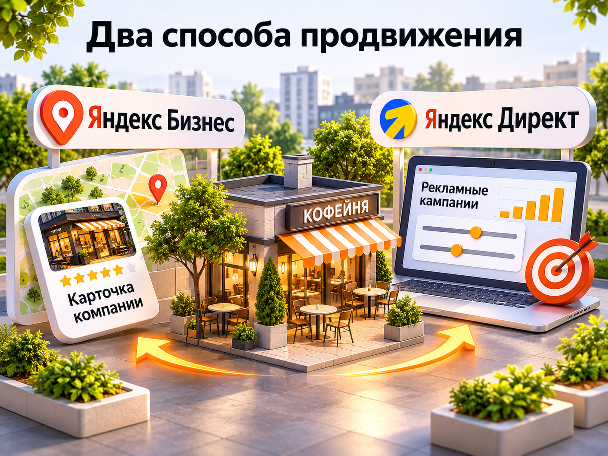

Блог о платном трафике
Чем отличается Яндекс Бизнес от Яндекс Директа и что выбрать
Яндекс Бизнес помогает компании присутствовать в Яндекс Картах и Поиске, управлять карточкой организации и запускать автоматизированную рекламу. Яндекс Директ предназначен для более гибкого управления рекламными кампаниями в Поиске, РСЯ, Картах и других местах показа.
Для небольшого локального бизнеса я рекомендую сначала оформить карточку организации и оценить спрос в Картах. Если нужно привлекать больше заявок через сайт, управлять рекламными запросами, аудиториями и стоимостью конверсий, стоит использовать Директ.
При этом выбирать только один сервис необязательно. Яндекс Бизнес и Директ могут работать совместно.
В чём разница между Яндекс Бизнесом и Яндекс Директом
Главное отличие заключается не в рекламных площадках, а в уровне управления и назначении инструментов.
Яндекс Бизнес объединяет управление информацией о компании и инструменты её продвижения. Директ позволяет создавать рекламные кампании с более детальными настройками и анализировать их эффективность.
| Что сравниваем | Яндекс Бизнес | Яндекс Директ |
|---|---|---|
| Основная задача | Присутствие компании и автоматизированное продвижение | Управление рекламой и привлечением клиентов |
| Бесплатные возможности | Создание и ведение карточки | Рекламное размещение платное |
| Где показывается реклама | Карты, Поиск, РСЯ и другие доступные площадки | Поиск, РСЯ, Карты и другие места показа |
| Настройка рекламы | Преимущественно автоматическая | Гибкие настройки, зависящие от типа кампании |
| Ключевые фразы и аудитории | Ограниченный ручной контроль | Более подробное управление таргетингами |
| Аналитика | Статистика рекламы и действий в карточке | Подробные отчёты, Метрика, конверсии |
| Нужен ли сайт | Нет, для карточки необязателен | Не всегда, доступны специальные сценарии без сайта |
| Кому подходит | Компаниям, которым важна простота и локальная видимость | Бизнесу, которому нужен контроль привлечения клиентов |

Важно понимать, что Яндекс Бизнес и Яндекс Директ не являются взаимоисключающими инструментами. Например, организация может вести карточку в Яндекс Бизнесе, а рекламу этой же организации в Картах запускать через Директ.
Что можно делать бесплатно в Яндекс Бизнесе
Создание и ведение карточки организации в Яндекс Бизнесе бесплатно. Для этого необязательно подключать рекламную подписку или покупать продвижение.
В профиле компании можно указать:
- Название, адрес, телефон и график работы.
- Услуги, товары и цены.
- Фотографии помещения, сотрудников и результатов работы.
- Ссылку на сайт и доступные способы связи.
- Информацию о компании и её особенностях.
Клиенты смогут находить организацию в Картах и Поиске, читать отзывы, изучать фотографии, звонить и строить маршруты.
Например, человек ищет автосервис поблизости. Он видит несколько организаций, сравнивает расположение, отзывы, цены и выбирает подходящую.
Для такого бизнеса карточка в Картах может стать самостоятельным источником обращений.
Бесплатное размещение не гарантирует высоких позиций в Картах. Видимость зависит от релевантности организации запросу, расположения, полноты информации и других факторов ранжирования.
Поэтому начинать работу стоит с корректного заполнения профиля и поддержания его актуальности.
Как работает платное продвижение в Яндекс Бизнесе
В Яндекс Бизнесе есть несколько платных инструментов. Их важно различать.
Приоритетное размещение предназначено для повышения заметности организации в Картах и Навигаторе. Оно помогает выделить компанию среди конкурентов и повысить её видимость по релевантным запросам.
Рекламная подписка решает более широкую задачу. Она автоматически создаёт объявления на основе информации о компании и может размещать их в Поиске, Картах и Рекламной сети Яндекса.
При использовании Рекламной подписки система самостоятельно подбирает рекламные объявления, аудитории и распределяет бюджет между доступными площадками.
Преимущество такого подхода в простоте. Предпринимателю не обязательно самостоятельно создавать рекламные кампании и управлять большим количеством настроек.
Недостаток заключается в ограниченном ручном контроле. Если нужно отдельно управлять семантикой, местами показа, стратегиями и анализировать эффективность конкретных направлений, возможностей Директа будет больше.
Я бы не рассматривал Рекламную подписку как обязательное продолжение бесплатной карточки. Сначала нужно определить, что именно требуется бизнесу: повысить видимость в Картах или привлекать клиентов через рекламу на разных площадках.
Чем Яндекс Директ отличается от Рекламной подписки
Яндекс Директ позволяет точнее управлять рекламой и её результатами.
Например, можно создать отдельные кампании для разных услуг, выбрать подходящие места показа, использовать поисковые запросы и минус-фразы, анализировать конверсии и менять настройки в зависимости от эффективности.
Для интернет-магазина это может быть реклама отдельных категорий товаров. Для строительной компании - кампании по строительству домов, ремонту и другим направлениям. Для стоматологии - отдельное продвижение имплантации, ортодонтии или протезирования.
В Директе доступны разные уровни автоматизации. Например, Мастер кампаний предлагает упрощённую настройку, а Единая перфоманс-кампания предоставляет более подробное управление.
Поэтому сравнивать сервисы по принципу «Яндекс Бизнес автоматический, а Директ полностью ручной» тоже неправильно. Автоматизация есть в обоих инструментах, но возможности управления различаются.
Подробнее о рекламной системе я рассказываю в статье «Как работает Яндекс Директ».
Можно ли рекламироваться в Яндекс Картах через Директ
Да. В Яндекс Директе можно выбрать Карты и список организаций как отдельное место показа.
Это важный момент, поскольку раньше Яндекс Бизнес часто воспринимался как основной инструмент рекламы в Картах, а Директ связывали преимущественно с Поиском и РСЯ.
Сейчас такое разделение уже не соответствует возможностям сервисов.
В Единой перфоманс-кампании можно настроить размещение в Картах и использовать данные организации из Яндекс Бизнеса.
Для этого необходимо связать подходящую организацию с рекламной кампанией. Директ сможет использовать сведения из её профиля, включая контактную информацию и доступные элементы карточки.
У такого способа продвижения есть преимущество: рекламу в Картах можно анализировать вместе с другими кампаниями и оптимизировать по выбранным целевым действиям.
При этом доступность отдельных функций зависит от типа кампании, настроек и категории организации.
Как выбрать инструмент под свой бизнес
Выбор зависит прежде всего от того, как потенциальный клиент ищет компанию и принимает решение о покупке.
Салон красоты, кафе, стоматология, автосервис
Для компаний, куда клиент приезжает лично, я бы начинал с Яндекс Бизнеса.
Человек выбирает не только услугу, но и конкретное место. Ему важны расстояние, фотографии, отзывы, график работы и удобство маршрута.
Например, житель района ищет салон красоты рядом с домом. Он может выбрать организацию непосредственно в Картах, даже не переходя на её сайт.
В такой ситуации разумно сначала привести в порядок карточку, проанализировать конкурентов и оценить возможности платного продвижения в Картах.
Директ понадобится, если нужно привлекать больше клиентов, рекламировать конкретные услуги или расширять географию привлечения.
Ремонт квартир, строительство и выездные услуги
Если клиенту не нужно приезжать в офис компании, значение расположения организации снижается.
Например, при выборе подрядчика для ремонта квартиры гораздо важнее стоимость работ, портфолио, гарантии, сроки и условия сотрудничества.
В такой ситуации основной точкой контакта часто становится сайт, где можно изучить предложение и оставить заявку.
Здесь я бы рассматривал Яндекс Директ как основной рекламный инструмент, а карточку в Яндекс Бизнесе использовал для дополнительного присутствия, контактов и отзывов.
Производство, оптовая торговля и B2B
Для производителей, поставщиков оборудования и B2B-компаний Яндекс Директ обычно полезнее Рекламной подписки.
В этих нишах особенно важно понимать, какие запросы приводят потенциальных покупателей, сколько стоят квалифицированные обращения и какие рекламные направления приносят продажи.
Бизнесу необходимо управлять семантикой, географией, посадочными страницами и аналитикой.
Например, поставщику промышленного оборудования важнее получить заявку на закупку, чем повысить количество просмотров карточки организации.
Карточку компании при этом всё равно стоит заполнить. Она помогает покупателю найти контактную информацию и проверить сведения о поставщике.
Интернет-магазин
Для интернет-магазина с доставкой по нескольким регионам основным инструментом я бы выбирал Директ.
Он позволяет продвигать товарные категории, отдельные предложения, работать с каталогом и анализировать продажи.
При этом Рекламная подписка Яндекс Бизнеса тоже поддерживает продвижение товаров с сайта. Поэтому считать её инструментом исключительно для офлайн-компаний неправильно.
Разница снова заключается в доступных настройках и степени контроля.
Подробнее о настройке рекламных кампаний можно прочитать в статье «Яндекс Директ для интернет-магазина».
Что дешевле: Яндекс Бизнес или Яндекс Директ
Нельзя утверждать, что Яндекс Бизнес дешевле Директа или наоборот. Стоимость привлечения клиента зависит от ниши, региона, конкуренции, предложения и эффективности рекламной кампании.
Различается и подход к оплате.
В Яндекс Бизнесе бюджет Рекламной подписки определяется при подключении. По условиям Яндекса минимальный срок такого размещения составляет 90 дней. Стоимость рассчитывается для конкретной компании и выбранных условий.
В Яндекс Директе рекламодатель выбирает бюджет и стратегию кампании. В зависимости от настроек оплата может быть связана с кликами или целевыми действиями.
Сравнивать каналы только по размеру рекламного бюджета неправильно.
Например, если на рекламу потрачено 30 000 рублей и получено 20 обращений, стоимость обращения составляет 1500 рублей.
Но если половина обращений не связана с покупкой, экономическая эффективность будет отличаться от кампании, которая привела столько же потенциальных покупателей с реальным интересом к услуге.
Поэтому при выборе инструмента важно считать не только переходы и обращения, но и квалифицированные лиды, продажи и расходы на привлечение клиента.
Как оценивать эффективность Яндекс Бизнеса и Директа
У обоих инструментов есть статистика, но возможности анализа различаются.
В Яндекс Бизнесе можно отслеживать просмотры карточки, переходы, нажатия на телефон, построение маршрутов и другие доступные действия пользователей.
Если подключена реклама, появляются дополнительные показатели рекламного размещения.
В Директе доступны подробные отчёты по рекламным кампаниям, показам, кликам, расходам, конверсиям и другим параметрам. Для сайта можно использовать цели Яндекс Метрики, а при наличии соответствующей интеграции учитывать данные CRM.
Однако у локального бизнеса есть важная особенность.
Построенный маршрут не означает, что человек действительно приехал. Нажатие на телефон не всегда означает состоявшийся разговор.
Поэтому я рекомендую сопоставлять данные рекламных систем с реальными обращениями и продажами.
Для салона красоты это могут быть записи на услуги. Для автосервиса - состоявшиеся обращения и заказы. Для интернет-магазина - оплаченные покупки.
Именно такие показатели помогают определить, какой инструмент действительно выгоднее.
Можно ли использовать Яндекс Бизнес и Директ одновременно
Да. Для многих локальных компаний совместное использование двух сервисов является разумным решением.
Яндекс Бизнес можно использовать для управления карточкой организации, актуализации информации, работы с отзывами и локальной видимости.
Через Директ можно запускать отдельные рекламные кампании для привлечения клиентов в Поиске, РСЯ и Картах.
Например, стоматология может поддерживать полноценную карточку организации, а через Директ рекламировать конкретные направления лечения.
При этом необязательно одновременно оплачивать Рекламную подписку Яндекс Бизнеса и рекламу в Директе.
Если оба инструмента используются для платного продвижения, нужно учитывать возможное пересечение аудиторий и оценивать результаты каждого размещения.
Для корректного анализа полезно отдельно учитывать обращения из карточки организации и рекламных кампаний. Источник каждого обращения важно учитывать отдельно, чтобы не посчитать одну заявку дважды.
Нужен ли сайт для Яндекс Бизнеса и Директа
Для создания карточки в Яндекс Бизнесе сайт не нужен. Компания может разместить контакты, услуги, фотографии и другую информацию непосредственно в профиле.
Для запуска Рекламной подписки собственный сайт тоже не всегда обязателен: Яндекс Бизнес предусматривает сценарии продвижения без него.
В Директе также есть возможность продвижения бизнеса без собственного сайта. Например, в Мастере кампаний предусмотрено создание простой посадочной страницы на основе описания предложения.
Однако для сложных услуг, B2B, интернет-магазинов и других направлений собственный сайт обычно даёт больше возможностей.
На нём можно подробно раскрыть предложение, показать кейсы, разместить формы заявок и настроить необходимые события аналитики.
Поэтому отсутствие сайта не является абсолютным препятствием для рекламы, но может ограничивать качество презентации предложения и последующей аналитики.
Как я рекомендую выбирать между Яндекс Бизнесом и Директом
Я бы принимал решение последовательно.
- Определить, где клиент выбирает исполнителя. Если основную роль играет близость организации и её рейтинг, стоит начать с Карт. Если человек сравнивает предложения, условия и стоимость, чаще потребуется более подробная посадочная страница.
- Оценить возможности управления. Если достаточно автоматизированного размещения, можно тестировать инструменты Яндекс Бизнеса. Если необходимы отдельные кампании, управление запросами, аудиториями и конверсиями, больше подходит Директ.
- Сравнить реальные результаты. Окончательное решение стоит принимать по обращениям, квалифицированным лидам и продажам, а не только по кликам и показам.
Для небольшой локальной компании Яндекс Бизнес может быть хорошей отправной точкой. Для бизнеса, который планирует систематически увеличивать поток заявок и управлять рекламной экономикой, я бы чаще выбирал Директ.
Что в итоге лучше: Яндекс Бизнес или Яндекс Директ
Яндекс Бизнес и Яндекс Директ решают пересекающиеся, но не одинаковые задачи.
Яндекс Бизнес стоит использовать всем компаниям, которым подходит размещение профиля организации в сервисах Яндекса. Бесплатная карточка помогает клиентам находить компанию, изучать информацию о ней и связываться с ней.
Платное продвижение через Яндекс Бизнес имеет смысл тестировать, когда достаточно автоматизированной рекламы или требуется повысить заметность организации в Картах.
Яндекс Директ стоит выбирать, когда нужно системно привлекать клиентов и управлять рекламной эффективностью. Он предоставляет больше возможностей для настройки кампаний, оптимизации и анализа результатов.
Мой подход простой: для локального бизнеса сначала обеспечить качественное присутствие в Картах, а затем выбирать платный рекламный инструмент исходя из задач, спроса и экономики привлечения клиентов.